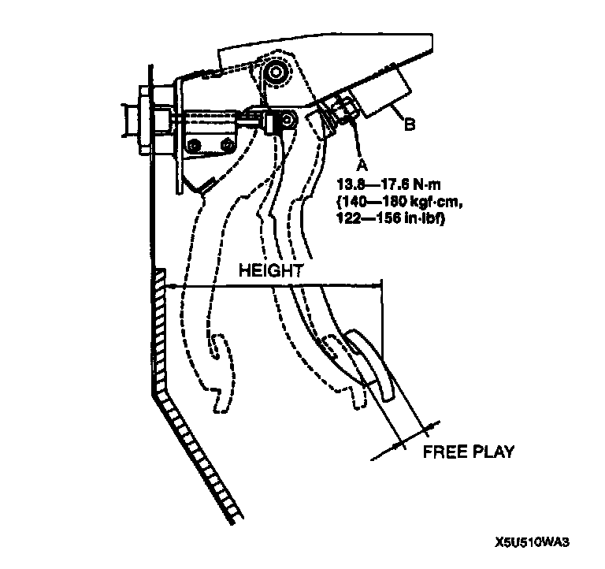

Clutch Pedal Assembly: Testing and Inspection
CLUTCH PEDAL INSPECTIONClutch Pedal Height Inspection

1. Measure the distance from the upper surface of the pedal pad to the cabin carpet.
Pedal height 175 - 180 mm (6.8 - 7.09 inch) (With carpet)
2. As necessary, adjust the height.
Clutch Pedal Free Play Inspection
1. Depress the clutch pedal by hand until clutch resistance is felt.
Free play 0.6 - 3.1 mm (0.02 - 0.12 inch)
Total free play 5 - 13 mm (0.20 - 0.51 inch)
2. Adjust the free play as necessary.